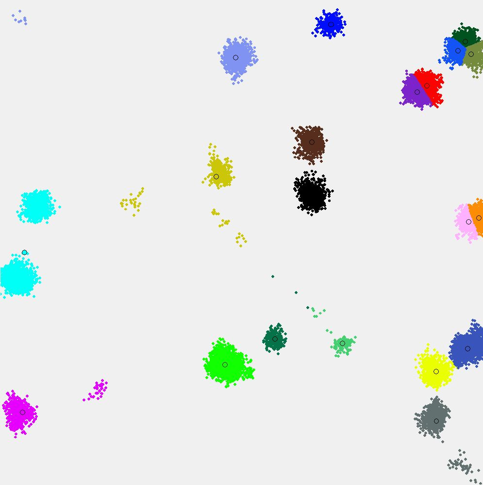
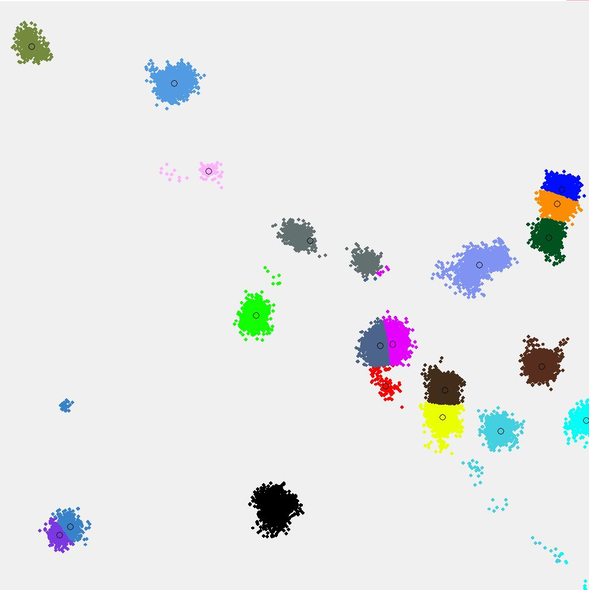

Zadanie 3b – klastrovanieMáme 2D priestor, ktorı má rozmery X a Y, v intervaloch od -5000 do +5000. Tento 2D priestor vyplòte 20 bodmi, prièom kadı bod má náhodne zvolenú polohu pomocou súradníc X a Y. Kadı bod má unikátne súradnice (t.j. nemalo by by viacej bodov na presne tom istom mieste). Po vygenerovaní 20 náhodnıch bodov vygenerujte ïalších 40000 bodov, avšak tieto body nebudú generované úplne náhodne, ale nasledovnım spôsobom:
Vašou úlohou je naprogramova zhlukovaè pre 2D priestor, ktorı zanalyzuje 2D priestor so všetkımi jeho bodmi a rozdelí tento priestor na k zhlukov (klastrov). Implementujte rôzne verzie zhlukovaèa, konkrétne tımito algoritmami:
Vyhodnocujte úspešnos/chybovos vášho zhlukovaèa. Za úspešnı zhlukovaè povaujeme takı, v ktorom iaden klaster nemá priemernú vzdialenos bodov od stredu viac ako 500. Vizualizácia: pre kadı z tıchto experimentov vykreslite vıslednú 2D plochu tak, e oznaèkujete (napr. vyfarbíte, oèíslujete, zakrúkujete) vısledné klastre. Dokumentácia musí obsahova opis konkrétne pouitıch algoritmov a reprezentácie údajov. Uveïte aj vizualizácie viacerıch pokusov. V závere zhodnote dosiahnuté vısledky ich porovnaním. Poznámka: Je vhodné poui rôzne optimalizácie pre dostatoène efektívnu prácu Vášho zhlukovaèa. Napríklad PyPy je implementácia programovacieho jazyka Python. PyPy èasto beí rıchlejšie ako štandardná implementácia CPython, pretoe PyPy pouíva just-in-time kompilátor. Pypy nepodporuje niektoré grafické kninice. Dva príklady vizualizácie:   |